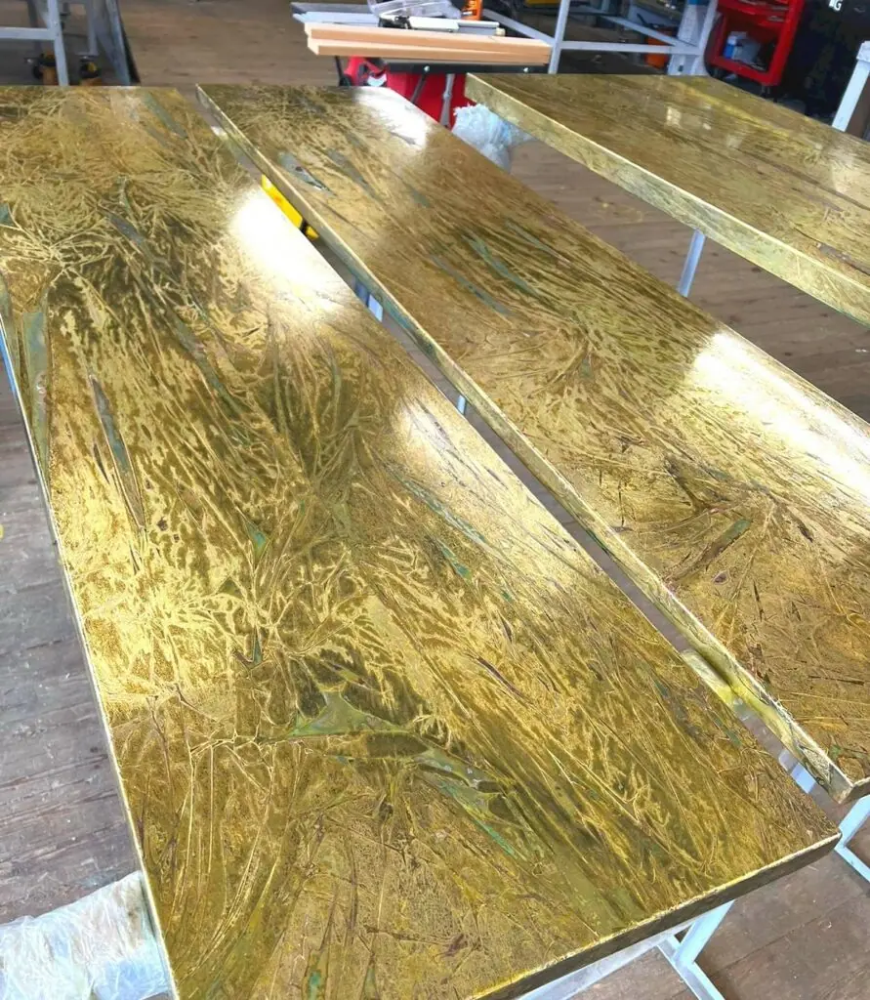

Each bespoke dining table top is easy to install and maintain, ensuring a hassle-free experience. We offer the option to provide the metal top as a sheet, shaped to your specifications, or to create and build the entire bespoke dining table to your desired style and dimensions.
Contact Halman Thompson to discuss your needs or request a free, no-obligation quote for your bespoke dining table.

Made to Measure
Our made to measure dining table tops are tailored to your specific dimensions, ensuring a perfect fit for your space. Each of our bespoke finishes can be purchased in sheets cut to your required size, making them ideal for your project. Every metal sheet can be coated with a protective clear lacquer, but we recommend using sheets at least 1.5mm thick so your dining table top can withstand daily use and maintain its beauty over time.

Ready to Go
At Halman Thompson, we make it easy to create your very own bespoke dining table. We can provide completed dining table tops with each of our finishes being wrapped around wood and lacquer finished, or we can supply a custom metal sheet that’s cut and finished to your exact specifications to attach to a table yourself. Simply select your preferred finish, provide your measurements, and we’ll take care of the rest!
Bespoke Dining Table Top Finishes
Our bespoke dining table tops come in a wide range of copper and brass styles, allowing you to create a table that perfectly complements your interior style. Whether you prefer the patinated effect of aged copper or the timeless look of natural brass , our beautiful selection of finishes provide durability and charm.
Why not create a unique centrepiece for your home with a bespoke dining table and chairs that match?
Choose from natural or aged brass or copper to suit your taste. You can have your bespoke dining table top in a number of finishes, including:
- Ayrshire finish – Vibrant aged copper with a striking mottled verdigris effect that adds character to any space
- Cheshire finish – Rich aged copper with contrasting light and dark tones that shift beautifully under different lighting
- Hertfordshire finish – Stunning aged copper showcasing a unique blend of verdigris accents throughout the surface
- Northumberland finish – Mesmerising swirls of aged copper and verdigris that reveal new details with every glance
- Natural copper finish – Classic natural copper finish that radiates a warmth unmatched by other metals
- Somerset finish – A unique aged brass with a captivating pattern of golden swirls and shards
- Wiltshire finish – A light aged brass with a speckled patina that shifts in appearance depending on the angle
- Cambridgeshire finish – Textured aged brass that enhances the metal’s beauty with added depth and character
- Natural brass finish – Elegant natural brass with a refined look that remains timeless and sophisticated
Handmade to Order
Every bespoke dining table top from Halman Thompson is handmade to order, ensuring that each piece is unique and crafted to the highest standards. Our expert artisans age each copper or brass sheet to your desired finish, allowing you to enjoy a one-of-a-kind piece that reflects your personal style and enhances your dining space. Whether you’re looking for a sleek modern look or a rustic antique aesthetic, our custom options ensure your vision becomes a reality.
Caring for Your Bespoke Dining Table Tops
It’s quick and easy to keep your bespoke dining table top looking its best over the years. There’s no need for specialist cleaners or complicated processes – just wipe it down occasionally with a soft cloth and warm soapy water to remove any dirt and debris.
Full care instructions are provided with every order to help you preserve the beauty of your handcrafted dining table.
Contact Halman Thompson for more information or complete the quote form for a free bespoke dining table quotation.
Choose a finish


If you can dream it, we’ll make it.
Bars, balustrades, staircases, worktops, cladding and pieces that don’t have a name yet. Our designers and craftspeople work in brass, copper, zinc and steel, and alongside wood.